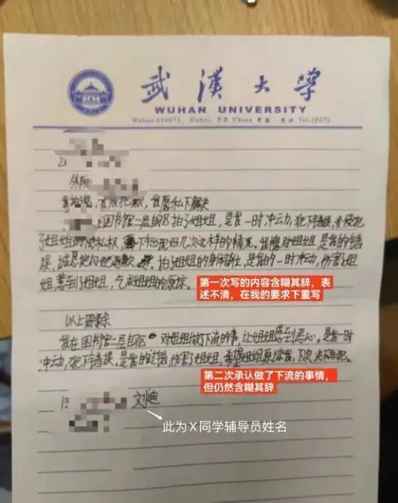

The repository currently contains one case that is easy to present clearly on a public project site: the Wuhan University reputation simulation experiment.
The current repository already includes event images, preview video frames, page data, and a complete experiment summary.

This case is useful because the results are readable even without deep internal context. It shows the main LightWorld ideas in one place: multimodal ingestion, topology-aware scheduling, memory, and asymmetric influence.
One readable PPR result: in the WHU experiment, the directed influence from self-media platform → school side is about 0.129, while the reverse direction is about 0.043. That is the kind of asymmetry the project wants to make visible.
Reserved for a future page showing one complete input-to-graph workflow with screenshots or structured output samples.
PlaceholderReserved for a hosted public demo once the backend service and a browser-facing frontend are ready to be deployed together.
Placeholder